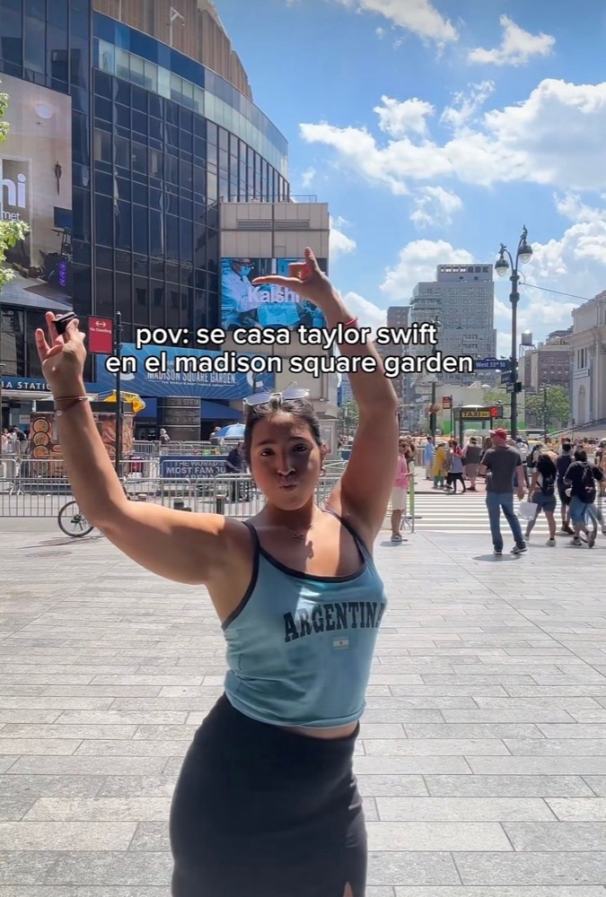
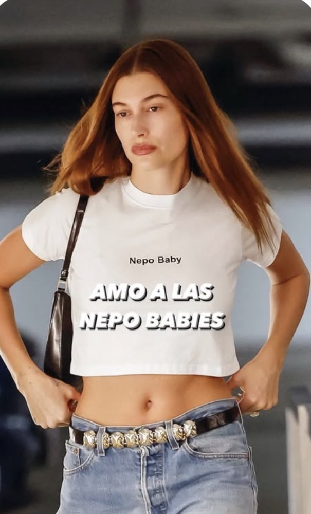
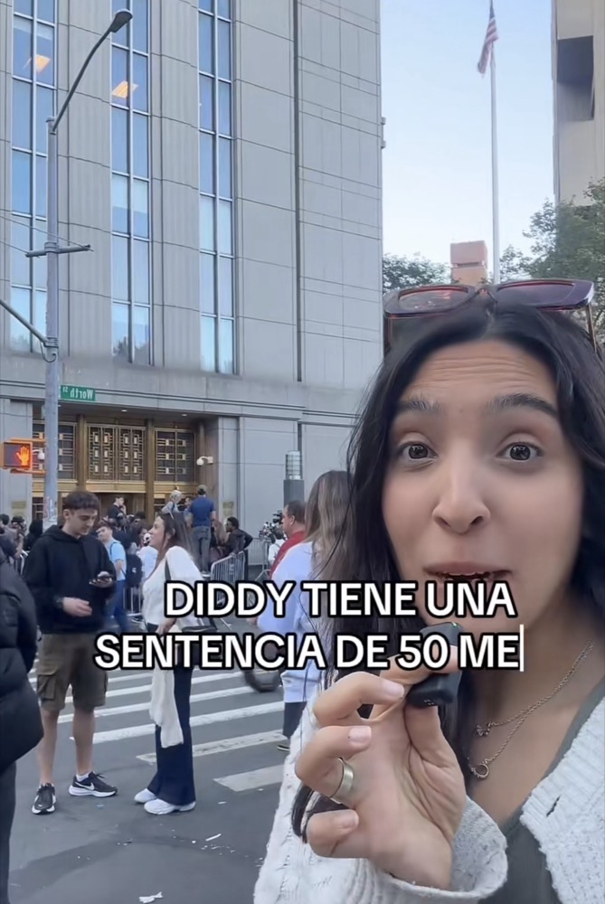
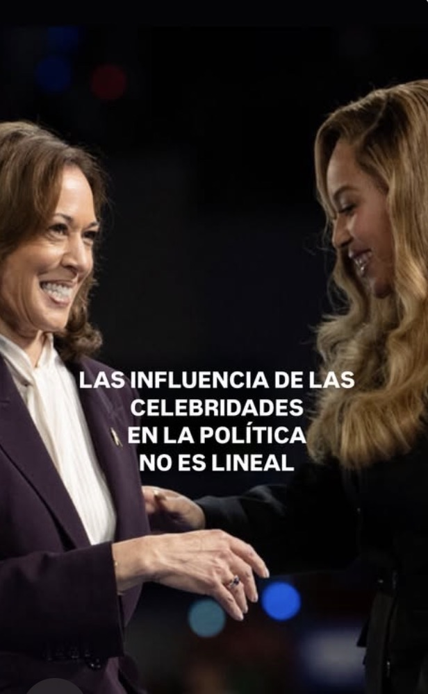
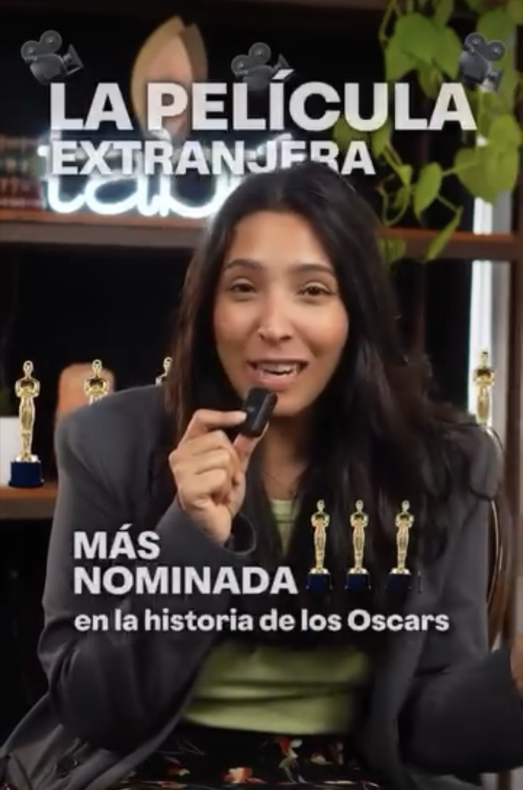

Founder & producer · Bilingual digital platform
Que Onda Hermanas
A bilingual platform that examines female representation in culture from a Latina perspective, analyzing pop culture stories through research and open conversation.
The idea
I created Que Onda Hermanas to analyze pop culture through research and open conversation. It grew into a space where women from different socioeconomic backgrounds share their stories, and a source of zero-party data about what this audience cares about.
The business
The main revenue stream was in-person events: a year of monthly gatherings in Buenos Aires, each with 20 to 30 women, produced with more than 10 brand partners. They turned an online audience into a real-world community.
Vertical feature videos have always been the most engaged content on the platform. Each one starts with a question my community is already asking.

Vertical feature · July 2026 · 93K likes
Taylor Swift is one of the most requested artists in my community, and every piece I've posted about her has beaten the engagement benchmark. When she married at Madison Square Garden, the question all over social media was “why is she going this big?” I took that question and, with a simple format, showed how New York City was receiving the event.

Vertical feature · July 2024 · 37K likes
After New York Magazine's nepo baby cover went viral, I asked about it on my Instagram stories, and ten responses pointed out that men benefit from nepotism too. My hypothesis: women get called nepo babies more than men. I tested it by searching the term, then built the story around what I found.

On-the-ground reporting · October 2025
I'd covered the Diddy case from Buenos Aires, reporting what American media published. After moving to New York, I spent a whole morning outside the Manhattan federal court waiting for the sentence. It came late in the afternoon, so I kept reporting across Manhattan and published the same day.

Vertical feature · November 2024
The day after the U.S. election: why so many of us, following celebrity endorsements and speeches from the other side of the world, were sure Kamala Harris would win.

Partnership · February 2025
A collaboration with Esto es Tabú asking whether being inclusive is enough to win an Oscar. Emilia Pérez broke nomination records and was loved at Cannes, but landed badly in Latin America, especially in Mexico, the country it set out to portray.
After two years of building the community online, I asked my Instagram audience who would join an in-person event, and 300 people said yes. The goal was to deepen loyalty and launch a revenue strategy. For the next year, monthly events with 20 to 30 women took place in Buenos Aires, with brands partnering to provide merchandise and be featured on our digital platforms.